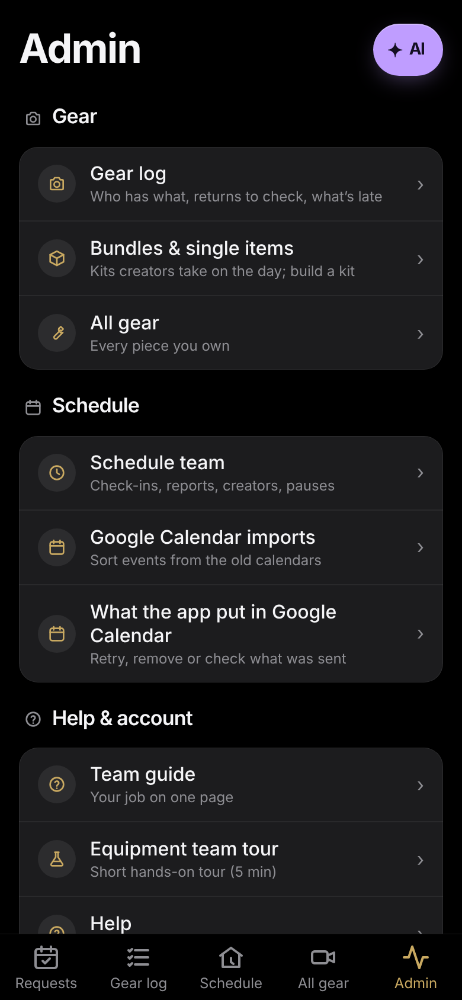
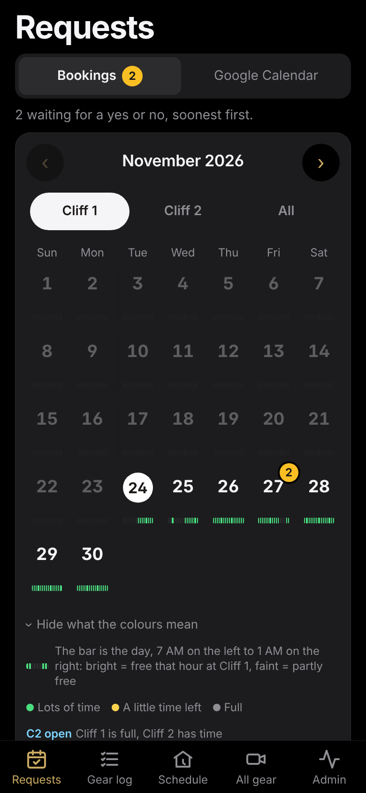
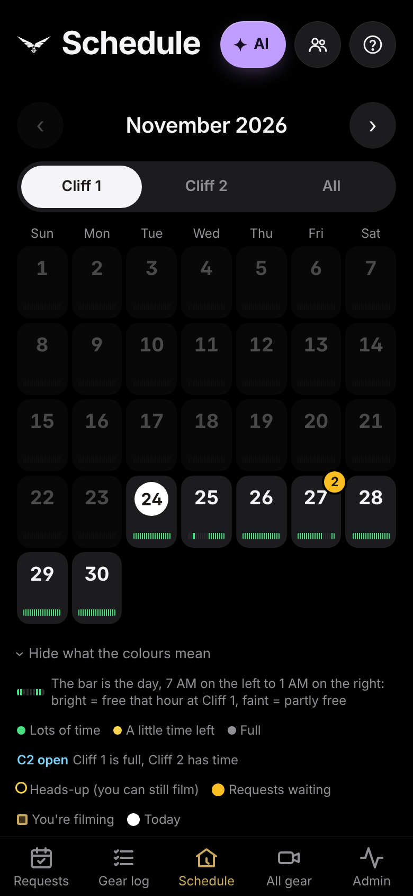
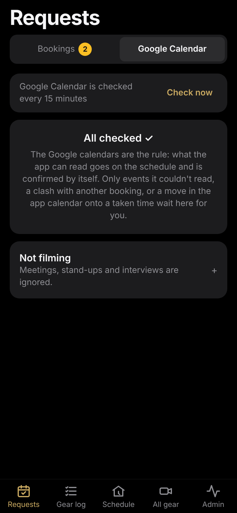
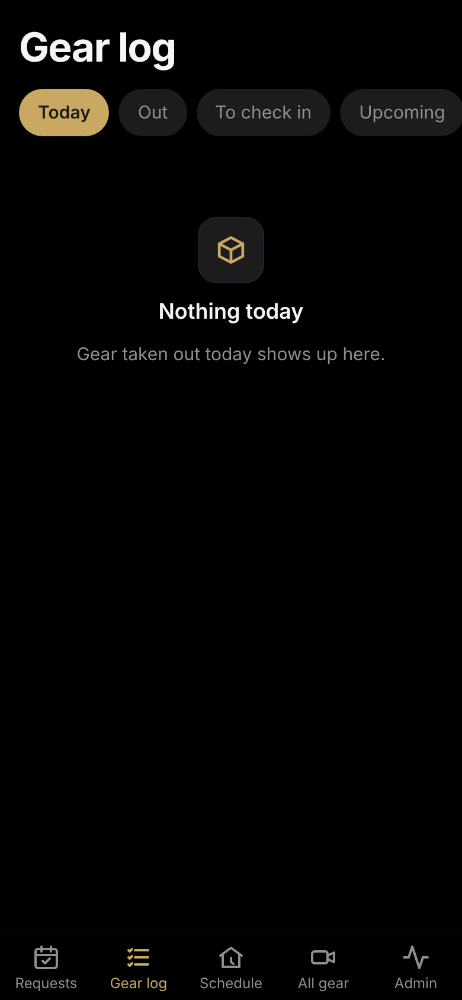
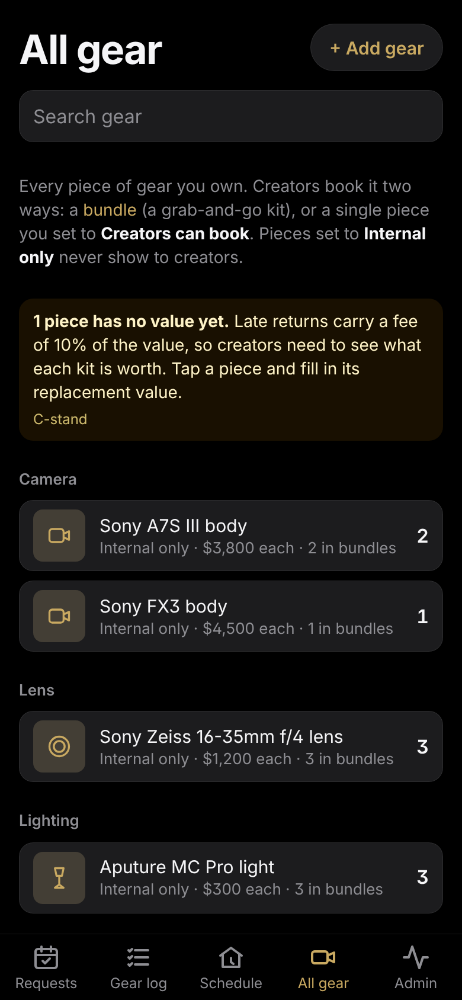
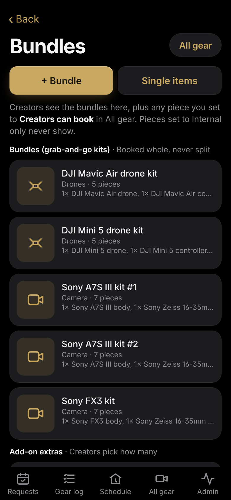

Running the schedule and the gear
For the equipment team: approve bookings, keep the calendars straight, block time, and look after the gear. Find what you want to do and follow the steps. Every card works on its own.
Find your way around
Where everything lives, on the phone and on the laptop. Read this once; after that, use the search box.
Know what each tab is for on my phone
Your phone has five tabs at the bottom. Everything else is in the Admin menu.
- Requests: booking requests to approve or deny, and the Google Calendar tab with events that need you.
- Gear log: who has which gear, what is late, what is back and waiting for you to check in.
- Schedule: the month calendar of both houses. Tap a day to see each house as a timeline, block time or book for someone. The people icon at the top opens Schedule team (creators, strikes and pauses).
- All gear: every piece you own, with values and who can book it.
- Admin: three groups. Gear: Gear log, Bundles & single items, All gear. Schedule: Schedule team, Google Calendar imports, What the app put in Google Calendar. Help & account: Team guide, Equipment team tour, Help, Report a problem and My account (notifications, laptop layout, sign out).

Work from my laptop
Open the app in a browser on a screen at least 1100 pixels wide and it switches to the laptop view: a sidebar on the left instead of the tab bar, and a wide week board on Requests.
- Go to proptracker.arbcreative.co and sign in with your work Google account.
- Use the sidebar: Requests (amber badge = requests and calendar events waiting), Gear log, No-shows & strikes (it opens Schedule team: creators, strikes and pauses), Schedule, then All gear, Kits and Admin (the Admin menu).
- Your name and photo at the bottom of the sidebar open your account.
Get a ping when something needs me
You are told about new booking requests and move requests, requests waiting more than 12 hours, instant bookings (Kyle), a creator cancelling an approved shoot, a house freed up today, gear taken, returned or handed over, gear problems reported, calendar clashes and Google Calendar events to check.
- Open Admin → My account.
- In the notifications card tap Turn on and allow notifications when the phone asks.
- Tap Send me a test. If nothing shows, try the test with the app closed.
- Do the same on your laptop browser, so you get pings at your desk too.
Ask the app how to do something
The violet ✦ AI button on the Admin page opens a help chat that knows every screen you can use. It only explains; it never changes anything.
- Tap ✦ AI at the top of Admin (or at the top of Schedule).
- Type your question in plain words, for example "how do I block time for cleaners".
- Read the steps and tap the Open … button to jump to the right screen.
Try: how do I make a camera bookable on its own?
Approve or deny booking requests
Every creator booking is a request. The time is held for them (dashed amber) until you or an admin approves it. People on "Books without approval" (for example Kyle) skip this.
Approve or deny today's requests on my phone
Each request card shows what you need to decide: how many shoots they filmed in the last 30 days, what they already have coming up, strikes or a pause, their other requests, who is before and after them at the house, and who they usually film with.
- Tap Requests. The Bookings tab is open, with the waiting count on it.
- Scroll under the month calendar to the request cards, soonest first (someone who lost their time to a priority booking comes first, marked "First in line"). Tap the date on a card to see that whole day.
- Read the flags on the card (for example "10th this month", "3 days in a row", "Back to back with X · usual partner").
- Tap Approve. The creator gets a notification and the booking turns solid on the schedule.
- Or tap Deny (see the next card).

Deny a request and say why
The creator reads your reason in their notification, so keep it short and kind. Denying frees the time at once, and any props they added for that shoot are let go.
- On the request card tap Deny.
- Tap a ready reason (The house is busy then, Too many bookings this week, Please pick another time) or type your own.
- Tap Deny again to send. (Back cancels.)
Go through requests fast on the laptop with the keyboard
On a laptop, Requests becomes a week board: 7 days, both houses, each as a timeline with every booking at its real time (friends on it show as +1, +2), with the waiting list on the right (oldest first) and a numbers strip on top (requests waiting, waiting over 12 h, shoots today, booked this week, house use this week, regular filming pairs).
- Open Requests in the sidebar. The first waiting request is selected and its details show on the right.
- Press A to approve. The next request is selected by itself.
- Press D to deny: pick a reason or type one, press Enter to send, Esc to back out.
- Press J / K for the next / previous request without deciding.
- Press W for the week board, M for the month, the left/right arrow keys to change week (or month), T to jump back to this week. Click a booking to open that booking.
Handle a creator who wants to move an approved shoot
When a creator moves an approved shoot, it shows as "wants to move". Their old time stays theirs until you decide, so nothing is lost if you say no.
- Open the card marked "wants to move" (blue on the laptop board).
- Check the new time and what is around it.
- Approve to move them, or Deny with a reason to keep the old time.
Deal with a "Cliff 1 + Cliff 2" request
A creator can ask for both houses at once for up to one hour. These always come to you, even from people who normally book without approval.
- The card is marked "Cliff 1 + Cliff 2" with the exact hour.
- Approve or Deny like any other request.
Check the filming guideline on a Thursday or Saturday request
Cliff 1 on Thursdays and Saturdays is for the priority group. Anyone outside the group must attach their filming guideline (a PDF) to ask for it.
- Open the request. A link to the guideline PDF is on the card.
- Open it and check it looks like a real plan for the shoot.
- Approve or Deny with a reason.
Know what happens if nobody decides in time
A request is not forever. This is why the Requests badge matters.
- After 12 hours waiting, you (and admins) get a reminder notification.
- If it is still undecided when the shoot is due to start, it is dropped: the time opens up and the creator is told it ran out.
See a whole day at both houses
Fastest way to answer "who is in Cliff 2 on Friday?"
- On Schedule tap the day in the month calendar.
- The day sheet shows Cliff 1 and Cliff 2 as timelines, every booking at its real time, with free stretches in gold: names, requests (dashed amber, "asked"), blocks, heads-ups (amber note at the top) and offsite shoots (underneath).
- Tap a name to open that booking. Tap a free time to book or block it.
Check or undo something I (or the team) did
The Team log lists every approval, denial, move, swap, cancel, priority booking, blocked time and Google Calendar card the team sorted, newest first, with who did it and when. Approved the wrong one? Undo it here.
- Open Admin → Team log (in the Schedule group).
- Use the chips to show only Approvals, Moves & changes, Google Calendar or No-shows & reports (no-shows you marked), or one person.
- Tap Open to see the shoot, or Undo. The app says what Undo will do; tap Yes, undo it.
Priority bookings (Kyle)
Stromedy (Kyle) has priority. His bookings are approved at once, and when he needs a time someone else has, you give it to him.
Give a time to Kyle when someone else has it
You choose what happens to the person who had it: move them to another free time that day, or cancel their shoot. Either way there is no strike.
- On a request card tap Priority booking…, or tap the person's name in a day and choose Priority booking on their booking card. (These buttons only show when someone is on "Books without approval".)
- Under Book it for pick Kyle (or type another name).
- Pick what happens to the current holder: Move them to … (one button per free time that day; their props and gear follow) or Cancel their shoot.
- Tap Book it for Kyle. Kyle gets the time as an approved booking.
Know who skips approval or can book long shoots
Three lists in Schedule settings decide this. Only the owner can change them; ask the owner if someone needs adding.
- Books without approval: bookings approved at once and can take any time (Kyle).
- Can book long times alone: long shoots without adding collaborators, and more than one booking a day (Danny / Stromedy Studios). Still a request unless they are also on the first list.
- The priority group: who can book Cliff 1 on priority days (Thursday and Saturday) before the Sunday release.
Change someone's booking
You can move, swap, cancel or book for anyone. None of this gives the creator a strike, and they always get a notification.
Open a booking to see or change it
Every change starts from the booking card.
- On Schedule or Requests, tap the day, then tap the person's name. (On the laptop board, click the booking.)
- The card shows who, when, where and the status, then the team options: Move to another day or time, Swap with another booking, Priority booking, then History (tap to open) and Cancel their shoot (no strike). Move, swap and priority only show for shoots that haven't started.

Move someone to another day or time
For example after a creator asks you on Slack. You can move to any free time; the usual 48-hour notice does not apply to the team.
- Open the booking card.
- Tap Move to another day or time.
- Choose Cliff 1, Cliff 2 or Either, then a From date if you want a later day, and tap Move here on one of the free times listed (it keeps the same length) (Show more times for more).
- The creator gets a notification. If the day changed, their props request moves with the shoot.
Swap two people's times
Both bookings change at once, so nobody is ever left without a time halfway through.
- Open one of the two bookings.
- Tap Swap with another booking.
- Search or pick the other person's upcoming house booking, check the two new times, and tap Swap them.
- Both get a notification. No strikes. Props move with each shoot if the day changes.
Cancel someone's shoot
When you cancel, it is never the creator's fault, so there is no strike.
- Open the booking card.
- Tap Cancel their shoot (no strike), then Yes, cancel.
- The creator is told. Props and gear requested for that shoot are cancelled too.
Book time for a creator
Bookings made by the team are approved at once, and you can book on priority days.
- On Schedule tap the day, then tap a gold free stretch.
- In the Book or block sheet tap Book a time here….
- Pick the start and end, then under Book for pick the creator (you must pick someone first), then tap the gold button. The team isn't limited to 2 hours per person.

Book an offsite shoot for someone
Offsite shoots hold no house but still go on the schedule, so props and gear can hang off them.
- On Schedule tap the day.
- At the bottom of the day sheet tap Book Offsite.
- Under Book for pick the person (you must pick someone first), then the day, From and Until (any half hour, up to 18 hours) and Where (an address or Maps link). Tap Add to the schedule.
Block time and heads-ups
Blocked time stops filming. A heads-up only warns people; they can still book.
Block time for cleaners, maintenance or an event
Nobody can book blocked time.
- On Schedule tap the day, then tap a free time at the right house.
- In Book or block, keep Blocks filming selected.
- Pick the type (Cleaners, Maintenance, Event, External rental, Blocked) and add a short note if you like, e.g. "Deep clean".
- Set From and Until in half hours, or tick The whole day at ….
- Tap Block ….
Block the same time every week
For example cleaners every Tuesday morning.
- Start a block as above.
- Under Repeat pick "Every Tuesday for 2, 4, 8, 12 or 26 weeks".
- Tap Block … for N weeks.
- Weeks where someone is already booked are skipped; the app lists them so you can deal with those by hand.
Warn people about something without blocking filming
For a delivery, a contractor outside, chargers being installed. It shows on the calendar (small amber dot on the day, a note at the top of the day sheet), and everyone can still book.
- Tap the day, then a free time.
- In Book or block switch to Heads-up only.
- Add a note saying what is happening, set the hours (or the whole day), and repeat if needed.
- Tap Add heads-up ….
Remove a block or a heads-up
The time becomes free straight away.
- On Schedule tap the day. For a block, tap the blocked (striped) time. For a heads-up, tap the amber "Heads-up" note at the top of the day.
- Tap Remove this block (or Remove this heads-up).
Google Calendar
The old Google calendars are the rule. Every 15 minutes the app reads them and follows them: new, changed and deleted events go on the schedule and are confirmed by themselves. Only events it could not read, and real clashes, wait for you.
Understand how the calendars and the app fit together
You will rarely need to type anything in the app for calendar events. Read this once.
- Every 15 minutes the app reads the app calendar and the old calendars (Cliff 1 / Stromedy Talent, Cliff 2, Stromedy…).
- Anything it can read (a person it knows and a house) goes on the schedule, confirmed, and the creator is told.
- Changed in Google = changed in the app. Deleted in Google = cancelled in the app (no strike, their props request is kept).
- One person, one shoot a day: if someone gets a newer entry on a day they already film, the newest entry wins and the props follow it.
- Everything from the old calendars is copied into the app calendar within 15 minutes.
- Bookings made only in the app are safe: an old-calendar event landing on them becomes a clash for you to decide.
Sort the events waiting for me
Check this tab once a day. "All checked" means nothing needs you.
- Open Requests → Google Calendar.
- Each card is an event the app could not read, a clash, or a move in the app calendar onto a taken time.
- For each card: Looks right ✓, Fix, or Skip (new events only).
- Every card has Open in Google Calendar so you can check the event first.

Fix an event the app couldn't read
Common reasons: nobody named, a first name two people share (for example two Justins), no house in a mixed calendar, or both houses named.
- On the card tap Fix.
- Choose A shoot, Blocked time or Heads-up only.
- For a shoot: pick who is filming (in order if it is a group) and the house or offsite.
- Tap Save and confirm.
Sort out a real clash in Google Calendar
The red box "Double-booked in Google Calendar" at the top of Requests → Bookings (on the laptop: above the waiting list) lists two events that really overlap at the same house, e.g. "Bryan 1:15–3:15 PM overlaps Pedro 2–4 PM".
- Tap See it in Google Calendar to look at that day.
- Find out who should have it (usually a quick message).
- If the calendar event's person should have it, tap Give it to … (always the person from the calendar event), then choose Move them to … or Cancel their shoot for the person who had that time, and tap Book it for ….
- If the person who already has the time should keep it, change or delete the other event in Google Calendar instead. The red box clears once they no longer overlap.
Stop a team meeting showing up as a clash
Meetings, stand-ups, huddles, all hands, 1:1s, interviews and onboarding are already ignored by themselves (unless the event says filming). For anything else that is not filming, teach the app once.
- On the card tap Not filming? Ignore events like this.
- Type a short phrase from the title, for example "ops review".
- Tap Ignore events like this. Every event whose title has that phrase is ignored from now on, and blocked time made from them comes off right away.
Move a shoot someone asked about on Slack, from Google Calendar
You can do it in Google Calendar and the app follows within 15 minutes.
- If the booking was made in the app: drag its event in the APP calendar. The app treats it as a team move (props follow, creator told).
- If it came from an old calendar: change the event in that old calendar.
- Or do it in the app instead: open the booking and use Move to another day or time.
Cancel a shoot by deleting its calendar event
Deleting the event is the same as a team cancel.
- Delete the event in Google Calendar (the app calendar for app bookings, the old calendar for imported ones).
- Within 15 minutes the shoot is cancelled with no strike. The creator is told.
- Their props request stays for that day: it joins any other shoot they have that day, or waits for them to cancel it.
Put creators' monthly guaranteed Cliff 1 shoots in
There is no draw in the app any more. You place the 4 guaranteed shoots yourself.
- Add each one as an event in the Cliff 1 Google Calendar with the creator's name in the title (as you always have).
- The app brings them in every 15 minutes, confirmed, and tells the creator.
Bring in one event with several creators
For example "Bryan, Eddy, Roland & Brad | Filming" 12–7 PM. At a house, the hours are shared out between them back to back, in the order named.
- If the app named everyone, nothing to do.
- If not, tap Fix on the card and add each person in order with Pick a creator (on the import screen: + Add another creator).
Redo an import that came in wrong
Takes the shoot (and any others from the same event) off the schedule and shows the event again on the import screen. Google Calendar is not changed.
- Open the shoot on the schedule.
- Tap Redo this import, then Redo it.
- Pick the right people and house on the import screen and import.
Sort many calendar events at once
The import screen shows every event from every linked calendar, with chips to look at one calendar at a time.
- Open Admin → Google Calendar imports.
- For each event choose Shoot (who, which house), Blocked time or Skip.
- Clearing junk: tap Set everything showing to Skip ›. Skipped events never come back.
- Tap the Import: … button at the bottom. It only acts on what is showing.
Check what the app wrote to Google Calendar
Every booking, move, cancel and block is written to the app calendar right away. If Google refuses (calendar not shared, API off), it waits here.
- Open Admin → What the app put in Google Calendar.
- Tick anything that could not be sent and tap Try N again, or Drop it.
- Under "In the calendar from the app", Remove takes an event off Google Calendar.
On the day: no-shows and strikes
Creators just film; there is no check-in. Every approved shoot counts as filmed unless you mark a no-show.
Mark whether someone filmed (or was a no-show)
Creators don't check in any more: they just film, and every approved shoot counts as filmed unless you mark a no-show. Only the team marks no-shows.
- Once the shoot has started, open the booking (on Schedule tap the day, then the person's name).
- Under Did they film? tap They filmed, or No-show.
- For a no-show, the app asks you to confirm. Tap No-show · strike. It gives them a strike.
Lift someone's pause
Too many strikes pauses a creator's prop requests for a while (by default 2 strikes in 30 days pauses 14 days).
- Open Schedule team → Creators.
- Find the person marked Paused · Lift and tap it.
See who books but doesn't film
A quick view for approving requests with confidence.
- Open Schedule team → Creators.
- Each creator shows filmed of booked and strikes.
Understand strikes
What gives a strike, and what it does.
- A strike comes from: a no-show you mark, a creator cancelling inside the notice period (unless they booked less than 24 hours ahead), or a strike an admin or the owner gives by hand.
- Too many in the window pauses PROP requests only. House booking and taking gear still work.
- Your moves, swaps and cancels never give a strike.
Gear going out
Gear is grab-and-go: creators take what is free on their shoot day, tick every piece and take one photo. Nobody needs to be in the cage.
Know how creators take gear
Gear is not booked ahead (unless the owner turned on "Creators can reserve gear ahead"). First come, first served.
- From an hour before their shoot, the creator opens Take gear in the Chat (or the gear list).
- They tick every piece in the case (or mark it missing) and take one photo.
- The gear is theirs until the end of their shoot (offsite: until midnight by default).
- It appears in your Gear log under Today and Out, and you get a "Gear taken" notification.

See who has which gear right now
The Gear log is your daily view.
- Tap Gear log.
- Today: out and due back today, or reserved for pickup today. Out: everything out, late first in red. To check in: returned, waiting for you. Upcoming and Past.
- Each card shows which shoot the gear is for (house or offsite place, day, hours, creator). Tap to open it.

Deal with a gear reservation made ahead
Only if the owner turned on "Creators can reserve gear ahead" in Schedule settings. Then creators can reserve a kit a set number of hours (24 by default) before their shoot.
- Reservations show in Gear log → Upcoming as Held.
- To refuse one: open it, tap Decline (equipment team), type a reason and tap Decline. (Or Cancel booking to just free the gear.)
Help a creator with a pickup
For gear reserved ahead (only when the owner turned that on). Gear taken on the day is ticked by the creator when they take it. You can do the pickup check on the creator's booking with them, from 30 minutes before the start.
- Open the booking from the Gear log.
- Under Pick up, tick every piece in the case. Tap Missing? for anything that is not there.
- Tap Sign: I've got it. From then on it is theirs.
Hand gear from one creator to another
For when someone walks in and needs the kit that is already out.
- Open the booking (status Out).
- Tap Someone else needs it now? Hand it over.
- Search the person, pick Until when? (no later than midnight), tick who used it, tap Hand it over.
- The old booking is closed as handed over; the new person does the normal pickup check.
Keep a kit from leaving the houses
For top cameras you want close.
- Open Admin → Bundles & single items → the kit.
- Turn on Houses only: offsite shoots cannot take it.
- Optionally set Usual kit for a house: the kit is shown first to creators filming there (a suggestion, not a rule).
- Tap Save changes.
Gear coming back
Creators return with a photo. You tick every piece and check it in.
Know what creators do at the return
The return is step by step in the creator's app.
- Tick what is coming back.
- Answer "Anything broken, damaged or missing?" (tap pieces + a few words).
- Answer "Is the charging case plugged in?"
- If shared, tick who used it.
- One photo of everything in the case with batteries charging. Send.
Check gear back in
The last step for every booking.
- Open Gear log → To check in and tap the booking.
- Look at the return photo.
- Tick every piece under Check in. Mark anything missing.
- Add a note if something is damaged, e.g. "lens cap scratched".
- Tap Checked in.
Deal with a missing piece
A missing piece puts a warning on the kit. The kit stays bookable, with the warning.
- Check Problems on the booking: it says whose booking it was on.
- When the piece turns up, open Admin → Bundles & single items and tap Found it on the warning.
Find out about damage or a problem
Creators can report a problem any time from the Chat, or at the return. You get a notification.
- Open the booking. Problems lists damage reported at the return and problems reported while it was out, with their notes.
- Look for "Charging case not confirmed at the return" too.
- Write what you found in the check-in note.
Handle late gear
Gear is late 30 minutes after it is due: the end of the shoot at the houses, the end of the day (by default) for offsite shoots.
- Late gear is first and red in Gear log → Out. The creator gets reminders.
- Message the creator if needed.
- They cannot take more gear until it is back.
Know how the late fee works
Company rule: gear brought back late carries a fee of 10% of its value, on the last person who had it.
- The app records how late and the value. It does not charge anything.
- Admins can excuse exceptions.
- Creators only see a value if you filled in replacement values (see Inventory).
Gear inventory and kits
Every piece you own lives in All gear. Kits are built from loose pieces.
Add a new camera (or any piece)
Add it to All gear first. Creators do not see it until it is in a kit or set to Creators can book.
- Tap All gear → + Add gear.
- Fill in Name, Type, a Serial number (for one unit) or How many, and the Replacement value ($ each).
- Add notes for the team if needed. Save.

Set replacement values
The late fee is 10% of the value, so creators need to see what each kit is worth. An amber box lists pieces with no value yet.
- Open All gear.
- Tap a piece in the amber "has no value yet" box (or any piece).
- Fill in Replacement value ($ each) and save.
Build a kit
Kits are the grab-and-go cases creators take whole. A piece can be in one kit at a time.
- Open Admin → Bundles & single items → + Bundle.
- Name it (the name creators see), pick the Type, add a Description for creators and a photo of the case.
- Add pieces with the steppers (only pieces not already in another kit can be added).
- Set Houses only and Usual kit for if you want, then Save bundle.

Change or retire a kit
Name, photo and description can change any time.
- Open the kit from Bundles & single items.
- Change what you need and tap Save changes.
- To retire it: Archive this bundle (its pieces become free again).
Let creators take a single piece on its own
For things used less often than kits.
- Open the piece in All gear.
- Under Who can book it on its own? pick Creators can book (default is Internal only).
- Tap Save. Loose units (not in a kit) now show to creators under Single items, to take on their shoot day.
Retire a piece you no longer have
Nothing is ever deleted; archived gear can be brought back.
- If it is in a kit, take it out of the kit first.
- Open it in All gear and tap Archive (we no longer have it).
- To bring it back: Show archived gear → the piece → Bring it back.
Rules, settings and help
What you can change, and what only the owner can change.
Know what I can change and what only the owner can
Keeps you from hunting for buttons you do not have.
- YOU: gear, kits, values, single items; blocks and heads-ups; the Not filming list; approving, denying, moving, swapping, cancelling and booking for anyone; marking no-shows and lifting pauses; calendar imports.
- ADMINS / OWNER: giving or removing a strike by hand, pausing someone, excusing a late fee, booking rules for props.
- OWNER ONLY (Schedule settings and Calendar & email): house hours, house bookings a day, moving notice, priority days and group, Books without approval, Can book long times alone, strike numbers, gear reservations ahead, offsite gear back-by time, app-only date, calendar links and writing to the old calendars.
Look up the current rules
The "How it works" page shows the house rules from the live settings, the same page creators read.
- On Schedule tap the ? button (or open Admin → Help), then tap All the house rules › at the bottom.
- The Team guide (Admin → Team guide) has your job on one page with the live numbers.
Refresh my memory with the Team guide or the tour
Both are always there if you forget how something works.
- Open Admin → Team guide for your job on one page, with the live numbers.
- Or open Admin → Equipment team tour for a 5-minute hands-on practice. Nothing you do in the tour is real.
Report a problem with the app
For the app itself (not broken gear).
- Open Admin → Report a problem.
- Go to the screen with the problem and tap Report this screen.
- Pick what kind, say what happened, tap Send report. The owner gets it with a screenshot.
See every shoot in my own phone calendar
A private live feed of the whole schedule.
- At the bottom of Schedule tap the card Schedule in my phone's calendar.
- iPhone: tap Add to iPhone / Apple Calendar. Google Calendar: tap Copy link (for Google Calendar), then on a computer add it under Other calendars → + → From URL.
- It updates by itself within about an hour. Do not share the link.
Quick answers
A creator says their request disappeared.
Either it was denied (they got your reason), or nobody decided before the start time and it ran out. Check the booking's History.
Why can't I approve a request or a move?
Most often the time has already started: requests can only be approved before the start (after that they run out). If a move to another day is approved, the props request goes with the shoot.
Two shoots are back to back at the same house. Is that a clash?
No, if their real hours do not overlap (e.g. 1:15–3:15 and 3:30–5:30). Only real overlaps show in the red "Double-booked" box.
A meeting keeps appearing on the schedule.
Tap "Not filming? Ignore events like this" on its card and type a phrase from its title. It also removes blocked time already made from it.
I changed an event in Google Calendar. When does the app update?
Within 15 minutes, or tap Check now on the Google Calendar tab.
Does moving or cancelling give a strike?
Never when the team does it. Only creators' late cancels, no-shows you mark and strikes admins give by hand count.
Can I give a strike by hand?
No, that is for admins and the owner. You mark no-shows and you can lift a pause.
A strike paused someone. Can they still film?
Yes. A pause only stops prop requests. House booking and gear still work.
Can creators book gear ahead?
Not unless the owner turns on "Creators can reserve gear ahead". By default gear is first come, first served on the shoot day.
When is gear late?
30 minutes after it is due: the end of the shoot at the houses, the end of the day for offsite shoots (by default).
Who pays the late fee on shared gear?
The last person who had it. The app only records it; admins can excuse it.
A piece is missing but the kit is still bookable. Is that right?
Yes. The kit shows a warning. Tap Found it when the piece turns up, or take it out of the kit.
Can I change a kit while it is out?
Name, photo and description yes; pieces no, until it is back.
Kyle booked over someone in his calendar. What do I do?
Open Requests, find it in the red "Double-booked" box and tap Give it to Kyle, then choose to move or cancel the other person (no strike). If the other person should keep it, change Kyle's event in Google Calendar instead.
Where are the Schedule settings?
Only the owner can open them. Ask the owner for changes.
Who else can approve requests?
Admins and the owner. Bookings the team makes are approved at once.
Request flags say "10th this month". Do I have to deny?
No. Those are rules of thumb to help you spot overbooking; you decide.